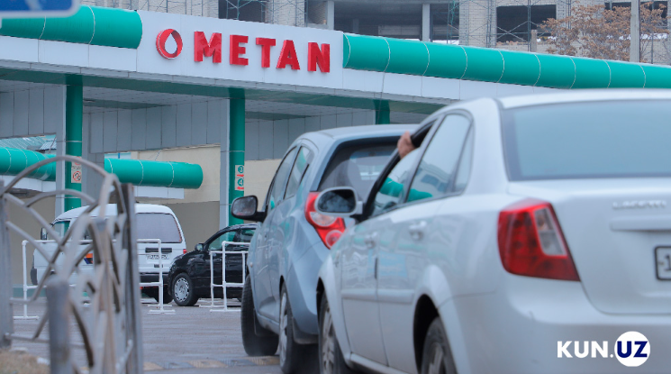

"O'zbekistonda yana metan "заправка" lar faoliyati cheklandi: sovuq sabab"
Sovuq ob-havo va gazga talab oshgani tufayli O'zbekistonda metan zapravkalari faoliyati yana vaqtincha cheklandi.
O‘zbekistonda havo haroratining keskin pasayishi sabab avtomobillarga gaz to‘ldirish kompressor shoxobchalari — AGTKSH (“metan zapravkalar”) faoliyatiga vaqtincha cheklovlar joriy etildi. Bu haqda O‘zbekiston Energetika vazirligi matbuot xizmati ma’lum qildi.
Vazirlik axborotiga ko‘ra, sovuq kunlarda tabiiy gazga bo‘lgan talab keskin oshgani sabab ayrim hududlarda gaz quvurlarida bosim pasayishi kuzatilmoqda. Shu munosabat bilan energetika tizimi uzluksiz ishlashini ta’minlash maqsadida soatlab kuchaytirilgan rejimida faoliyat yuritmoqda, hududlardagi holat doimiy nazoratda. Rasmiy ma’lumotda ta’kidlanishicha, aholi xonadonlari, tibbiyot va ta’lim muassasalarini tabiiy gaz bilan ta’minlash ustuvor vazifa hisoblanadi. Shu sababli, avtomobillarga xizmat ko‘rsatuvchi “metan zapravkalar” faoliyati vaqtincha cheklandi.


“Bu choralar faqat sovuq kunlarda aholini barqaror gaz bilan ta’minlashga qaratilgan. Holat barqarorlashishi bilan cheklovlar bekor qilinadi”, — deyiladi xabarda.
Shu bilan birga, ijtimoiy soha obyektlari hamda jamoat transportiga gaz ta’minoti cheklovlarsiz amalga oshirilishi qayd etildi. Vazirlik bu yo‘nalishlardagi transport vositalarining uzluksiz ishlashi aholiga ko‘rsatilayotgan xizmatlar sifati uchun muhim ekanini urg‘uladi.
Hududlardagi vaziyatga qarab qo‘shimcha ma’lumotlar berib borilishi aytilgan. Ayni paytda metan zapravkalarning aniq ish jadvali e’lon qilinmagan. Eslatib o‘tamiz, 11-dekabr kuni ham O‘zbekiston bo‘ylab AGTKSHlar faoliyati cheklangan edi. 8-yanvardan boshlab metan zapravkalar kuniga olti soat — 10:00 dan 16:00 gacha ishlayotgan, Farg‘ona vodiysida esa umuman ochilmagan edi.